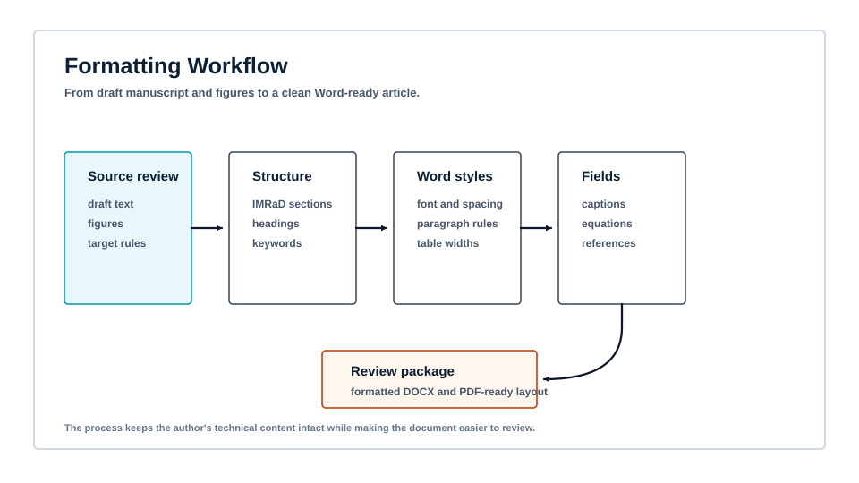
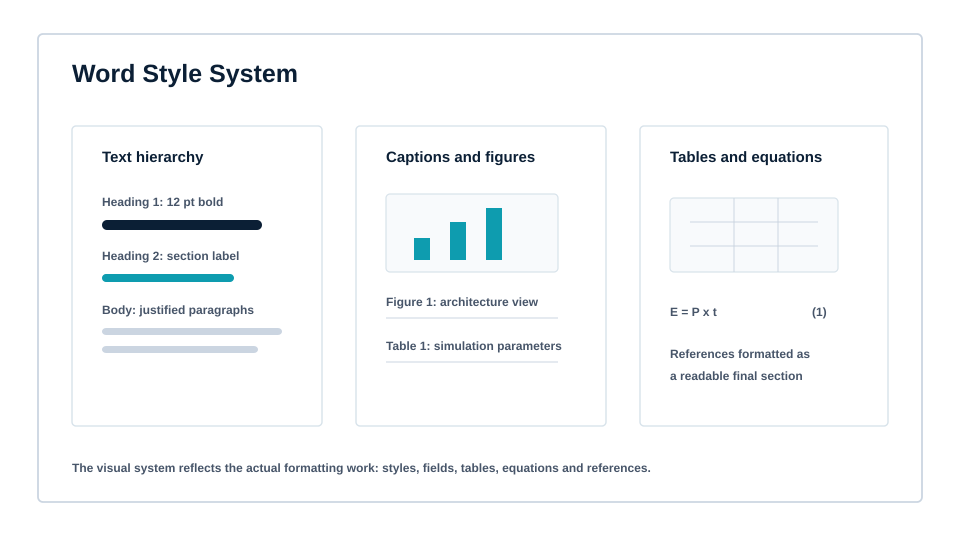
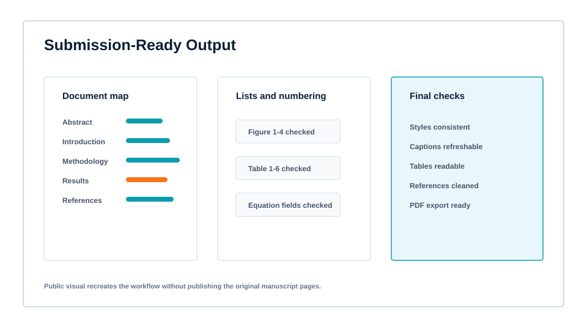

Research manuscript formatting and Word preparation
A document-support project that turned a technical research manuscript, figures and tables into a cleaner Word-ready article with consistent structure, captions, equations and references.

The Brief
The manuscript had strong technical content, but it needed a professional document structure before it could be shared for review.
The work involved converting a research article draft into a clean Word-ready manuscript: section hierarchy, body typography, tables, figures, captions, equation numbering and references all had to read as one coherent document. The public version recreates the formatting workflow without publishing the original manuscript pages or author details.
The Challenge
Formatting quality had to support the academic argument instead of becoming another source of correction.
Structure control
The article needed a clear title block, abstract, keywords, introduction, related work, methodology, results, conclusion and references.
Visual consistency
Figures, tables and captions needed consistent placement, numbering and readable spacing across the manuscript.
Word readiness
The final document needed styles, fields and layout settings that could survive review, PDF export and later edits.
Formatting Flow

Checked the draft, figures, tables, equations and target formatting expectations before restructuring.
Arranged the article around a clear research-paper flow instead of thesis-style chapter carryover.
Applied consistent font, spacing, paragraph alignment, table rules, caption style and equation handling.
Prepared the manuscript for Word/PDF review with clean numbering and public-safe review notes.
Document Evidence
The final presentation focused on the evidence a reviewer actually sees: hierarchy, readable figures, consistent tables and refreshable document fields.


Outcome
The finished document became easier to review because formatting decisions were systematic and traceable.
This public case study recreates the formatting process. Original manuscript pages, author identifiers, registration details, local paths and private research files are not published.
Need a report, thesis or article formatted properly?
Send the current document, required format, deadline and any school, journal or supervisor instructions.